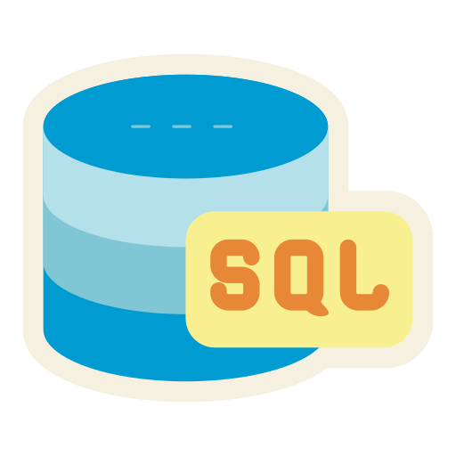
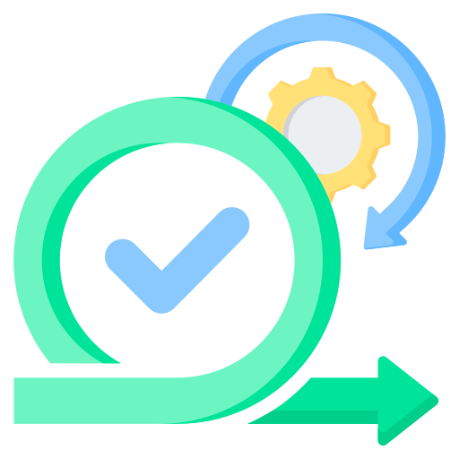
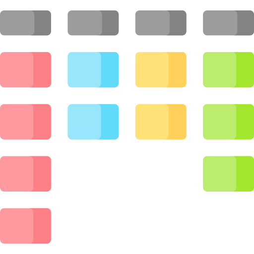

🧰 Technologies principales
Langages & Frameworks
Python
Utilisé sur le projet Wa-Tor et divers autres projets d'analyse de données en formation
.NET / EF Core
Employé sur divers projets fullstack chez IBM

Vue.js
Employé sur divers projets frontend chez IBM

Bash
Utilisé fréquemment sur chaque projet IBM et lors des projets Simplon
Streamlit
Utilisé pour créer des dashboards interactifs pendant la formation chez Simplon
Bases de données

SQL
Manipulé pour la gestion de données relationnelles chez IBM

Bases de données
Manipulé pour la gestion de données relationnelles chez IBM
Big Data & Traitement de données

Hadoop
À venir dans la suite de la formation Data Engineer chez Simplon

Spark
Prévu pour l’analyse de données distribuées en formation chez Simplon

BeautifulSoup
Sera utilisé pour le scraping HTML lors d’exercices à venir chez Simplon
Scrapy
Prévu pour des projets de scraping avancé chez Simplon
Selenium
Exploration future pour l’automatisation de navigation web dans des projets chez Simplon
DevOps & Cloud
Docker
Sera utilisé pour le déploiement de conteneurs en formation chez Simplon
Azure
Exploration prévue pour les services cloud Azure en formation chez Simplon
Terraform
Prévu pour l’infrastructure as code lors de la suite de la formation chez Simplon

Git
Utilisé pour la gestion de versions chez IBM et Simplon
GitHub
Employé pour collaborer sur du code source chez IBM et Simplon
Systèmes d'exploitation
Linux
Utilisé en environnement de développement et pour les scripts Bash chez Simplon
Windows
Employé au quotidien pour coder et tester les projets chez IBM
Agilité & Méthodologies
Jira
Utilisé pour le suivi de projet Agile chez IBM

Scrum
Méthodologie pratiquée dans les projets d’équipe chez IBM et Simplon

Kanban
Appliqué lors de la gestion de tâches en mode Agiles chez IBM